<!doctype html><html lang="pt-BR"><meta charset="utf-8"><script>if(new URLSearchParams(location.search).has("embedded"))document.documentElement.classList.add("embedded")</script><meta name="viewport" content="width=device-width"><title>Gabriel Bussinger | Dados pessoais</title><style>
  /* Filosofia de trabalho, Gabriel Bussinger: identidade em identidade.md */
  @property --luz{syntax:"<percentage>";inherits:true;initial-value:-30%}
  :root{
    --noite:#001d35;        /* azul-marinho dominante (paleta do cliente, 2026-11-04) */
    --ciano:#3affe7;        /* aqua: o destaque único */
    --ciano-fundo:#07475C;
    --fundo-luz:#06325A;    /* brilho atrás dele */
    --giz:#EEEEEE;
    --linha:#EEEEEEA6; /* o claro a 65%, para texto de apoio */
    --grafite:#1B2126; /* chão abaixo do meio-campo e moldura */
    --display:"League Gothic","Arial Narrow",sans-serif;
    --palavra:"Smooch Sans","League Gothic","Arial Narrow",sans-serif;
    --texto:"Archivo",Arial,sans-serif;
    --margem:96px;
    /* vidro */
    --vidro:linear-gradient(155deg,#ffffff1f,#ffffff08 45%,#3affe70d);
    --vidro-borda:#ffffff2e;
    --vidro-brilho:inset 0 1px 0 #ffffff40,inset 0 -1px 0 #ffffff0d;
  }
  *{margin:0;padding:0;box-sizing:border-box}
  html,body{background:var(--grafite);height:100%}
  body{overflow:hidden}
  .palco{position:fixed;inset:0;display:grid;place-items:center}
  .export .palco{position:static;display:block}

  .slide{
    position:absolute;left:50%;top:50%;width:1920px;height:1080px;overflow:hidden;flex:none;display:none;
    transform-origin:center;color:var(--giz);font-family:var(--texto);
  }
  .slide.ativo{display:block}
  .capa{
    /* Estádio à noite, gerado por ferramentas/estadio.py; o gradiente escurece o topo para o cabeçalho */
    background:
      linear-gradient(180deg,#00060fcc 0%,#00060f00 22%),
      url(assets/estadio.jpg) center/cover no-repeat,
      #000a16;
  }
  .export .slide{position:relative;left:auto;top:auto;transform:none!important}
  .export *{transition:none!important}


  /* Topo */
  .topo{position:absolute;z-index:4;top:38px;left:var(--margem);right:var(--margem);display:flex;justify-content:space-between;align-items:center}
  .topo p{font-size:17px;line-height:1.35;color:var(--linha)}
  .topo p b{display:block;font-weight:600;color:var(--giz)}

  /* Seletor de idiomas, em vidro */
  .idiomas{display:flex;gap:4px;padding:5px;border-radius:999px;background:var(--vidro);border:1px solid var(--vidro-borda);box-shadow:var(--vidro-brilho),0 10px 30px -12px #0008;-webkit-backdrop-filter:blur(18px) saturate(140%);backdrop-filter:blur(18px) saturate(140%)}
  .idiomas button{font:600 15px/1 var(--texto);font-stretch:112%;color:var(--linha);background:transparent;border:0;border-radius:999px;min-width:56px;height:40px;padding:0 14px;cursor:pointer;transition:background .2s,color .2s}
  .idiomas button:hover{color:var(--giz)}
  .idiomas button[aria-pressed=true]{background:#3affe724;color:var(--ciano);box-shadow:inset 0 0 0 1px #3affe755}
  .idiomas button:focus-visible{outline:2px solid var(--ciano);outline-offset:2px}

  /* A palavra, com luz suave */
  .palavra{position:absolute;z-index:1;left:0;right:0;top:64px;text-align:center;white-space:nowrap;pointer-events:none}
  .palavra > span{
    position:relative;display:inline-block;
    font-family:var(--palavra);font-weight:900;font-synthesis:none;text-transform:uppercase;
    line-height:.8;letter-spacing:.012em;padding-top:.02em;
    transform:scaleY(1.28);transform-origin:top center;
  }
  /* FILOSOFÍA: o acento do Í precisa de espaço no alto */
  html[lang=es] .palavra{top:104px}
  .palavra .letras{
    background:
      /* reflexo: faixa larga e fraca, com queda suave nas bordas */
      linear-gradient(108deg,transparent calc(var(--luz) - 24%),#ebfffb0a calc(var(--luz) - 15%),#ebfffb21 calc(var(--luz) - 8%),#f5fffd3d var(--luz),#ebfffb21 calc(var(--luz) + 8%),#ebfffb0a calc(var(--luz) + 15%),transparent calc(var(--luz) + 24%)),
      /* luz difusa vinda de cima */
      radial-gradient(ellipse 55% 80% at 50% -14%,#ebfffb52 0%,#ebfffb00 100%),
      linear-gradient(180deg,var(--ciano) 0%,var(--ciano) 22%,#21b8ab 50%,var(--ciano-fundo) 72%,#012339 100%);
    -webkit-background-clip:text;background-clip:text;color:transparent;
    animation:luz 13s cubic-bezier(.42,0,.3,1) 1.5s infinite;
  }
  /* brilho difuso por trás das letras */
  .palavra .brilho{position:absolute;inset:-120px;padding:calc(.06em + 120px) 120px 120px;color:var(--ciano);opacity:.4;filter:blur(42px);
    -webkit-mask-image:linear-gradient(180deg,#000 35%,transparent 78%);mask-image:linear-gradient(180deg,#000 35%,transparent 78%)}
  @keyframes luz{0%{--luz:-30%}62%{--luz:130%}100%{--luz:130%}}
  .export .palavra .letras{animation:none;--luz:70%}
  @media (prefers-reduced-motion:reduce){.palavra .letras{animation:none}}

  .halo{position:absolute;z-index:0;inset:0;pointer-events:none;
    background:radial-gradient(ellipse 620px 360px at 84% 8%,#3affe726,transparent 70%),radial-gradient(ellipse 620px 360px at 14% 8%,#3affe71a,transparent 70%)}

  /* Ele */
  .retrato{
    position:absolute;z-index:2;top:64px;left:50%;height:1560px;transform:translateX(-50%);
    -webkit-mask-image:linear-gradient(90deg,transparent 0,#000 19%,#000 100%),linear-gradient(180deg,#000 100%,#000 100%);
    -webkit-mask-composite:source-in;mask-composite:intersect;
    filter:saturate(.9) contrast(1.03) drop-shadow(0 0 16px #0b0f1299);
  }
  /* Sombra projetada dele sobre a palavra e o fundo */
  .retrato-sombra{
    position:absolute;z-index:2;top:64px;left:50%;height:1560px;pointer-events:none;
    transform:translate(calc(-50% - 34px),24px);
    filter:brightness(0) blur(30px);opacity:.74;
    -webkit-mask-image:linear-gradient(90deg,transparent 0,#000 19%,#000 100%);mask-image:linear-gradient(90deg,transparent 0,#000 19%,#000 100%);
  }
  .sombra-chao{position:absolute;z-index:2;left:0;right:0;bottom:0;height:220px;background:linear-gradient(0deg,#0b0f12f2 0%,#1b2126b0 30%,transparent)}

  /* Nome, sobre a base da palavra */
  .nome{position:absolute;z-index:3;left:var(--margem);top:520px;width:600px}
  .nome h1{position:relative;font-family:var(--display);font-weight:400;text-transform:uppercase;font-size:134px;line-height:.86;letter-spacing:.01em}
  .nome h1 > span{display:block}
  .n-sombra,.n-aresta{position:absolute;inset:0}
  .n-sombra{color:#0b0f12;opacity:.3;filter:blur(20px);transform:translateY(10px)}
  .n-vidro{
    color:transparent;
    background:linear-gradient(172deg,#fffffffa 0%,#ffffffee 40%,#ffffffd6 70%,#e9fffae0 100%);
    -webkit-backdrop-filter:blur(14px) saturate(170%) brightness(1.2);backdrop-filter:blur(14px) saturate(170%) brightness(1.2);
    -webkit-mask-image:linear-gradient(#000,#000);-webkit-mask-clip:text;mask-clip:text;
  }
  .n-aresta{color:transparent;-webkit-text-stroke:1.2px #ffffff;
    -webkit-mask-image:linear-gradient(180deg,#000 0%,#0008 45%,#0003 100%);mask-image:linear-gradient(180deg,#000 0%,#0008 45%,#0003 100%)}
  .cargo{font-size:24px;font-weight:600;font-stretch:112%;color:var(--ciano);margin-top:26px}
  .nome p{font-size:21px;line-height:1.45;color:#EEEEEEDE;margin-top:10px;text-wrap:balance}

  /* Licenças, num painel de vidro */
  .licencas{position:absolute;z-index:3;right:var(--margem);top:486px;width:410px;list-style:none;display:grid;gap:14px}
  .licencas li{
    display:grid;grid-template-columns:64px 1fr;align-items:center;gap:22px;padding:18px 26px;border-radius:20px;
    background:var(--vidro);border:1px solid var(--vidro-borda);
    box-shadow:var(--vidro-brilho),0 24px 50px -28px #000c;
    -webkit-backdrop-filter:blur(22px) saturate(150%);backdrop-filter:blur(22px) saturate(150%);
  }
  .licencas .selo{height:60px;display:grid;place-items:center}
  .licencas .selo img{max-height:60px;max-width:64px;object-fit:contain}
  .licencas strong{display:block;font-size:24px;font-weight:600;font-stretch:112%;color:var(--giz)}
  .licencas span{display:block;font-size:18px;color:var(--linha);margin-top:4px}

  .marca-pp{height:42px;width:auto;display:block;filter:brightness(0) invert(1)} /* logo em branco */
  .rodape{position:absolute;z-index:4;left:var(--margem);right:var(--margem);bottom:34px;display:flex;justify-content:space-between;align-items:center;font-size:17px;color:var(--linha)}

  /* ---------- Etiqueta, rodapé e marca dos slides internos ---------- */
  .etiqueta{position:absolute;z-index:3;left:var(--margem);top:78px;display:flex;align-items:center;gap:26px}
  /* Etiqueta em vidro: brilho de aresta em gradiente, reflexo na metade de cima e uma luz aqua atrás para o desfoque ter cor */
  .etiqueta::before{content:"";position:absolute;z-index:-1;left:-60px;top:-46px;width:640px;height:170px;pointer-events:none;
    background:radial-gradient(closest-side,#3affe72e,#3affe70a 60%,transparent);filter:blur(6px)}
  .pill{position:relative;display:inline-flex;align-items:center;gap:18px;padding:8px 8px 8px 30px;border-radius:999px;
    background:linear-gradient(135deg,#ffffff2b 0%,#ffffff12 36%,#ffffff06 62%,#3affe712 100%);
    box-shadow:inset 0 1px 0 #ffffff59,inset 0 -1px 0 #ffffff12,inset 0 0 22px #ffffff0a,0 20px 44px -20px #000000d9,0 2px 8px -2px #00000066;
    -webkit-backdrop-filter:blur(24px) saturate(180%);backdrop-filter:blur(24px) saturate(180%);
    font-family:var(--texto);font-weight:600;font-stretch:112%;text-transform:uppercase;font-size:24px;line-height:1;letter-spacing:.07em;color:var(--giz)}
  .pill::before{content:"";position:absolute;inset:0;border-radius:inherit;padding:1.2px;pointer-events:none;
    background:linear-gradient(135deg,#ffffffb3 0%,#ffffff2e 30%,#ffffff0d 55%,#ffffff1f 75%,#3affe799 100%);
    -webkit-mask:linear-gradient(#000 0 0) content-box,linear-gradient(#000 0 0);-webkit-mask-composite:xor;mask-composite:exclude}
  .pill::after{content:"";position:absolute;left:14px;right:14px;top:1px;height:46%;border-radius:999px 999px 50% 50%/999px 999px 100% 100%;pointer-events:none;
    background:linear-gradient(180deg,#ffffff24,#ffffff00);
    -webkit-mask-image:linear-gradient(90deg,transparent,#000 18%,#000 82%,transparent);mask-image:linear-gradient(90deg,transparent,#000 18%,#000 82%,transparent)}
  .pill .sec{position:relative;z-index:1;border-radius:999px;padding:11px 24px 10px;color:var(--noite);
    background:linear-gradient(180deg,#8dfff2 0%,#3affe7 48%,#22cdbb 100%);
    box-shadow:inset 0 1px 0 #ffffffc0,inset 0 -2px 5px #00715f4d,0 0 24px #3affe74d,0 6px 14px -6px #3affe799}
  .etiqueta .sub{font-size:24px;font-weight:600;font-stretch:112%;color:var(--linha)}
  .interno .rodape{align-items:center}
  .assina{display:flex;align-items:center;gap:22px}
  .selos{display:flex;align-items:center;gap:16px;padding-right:22px;border-right:1px solid #eeeeee30}
  .selos img{height:30px;width:auto;max-width:46px;object-fit:contain}
  .assina-t{font-size:16px;font-weight:600;font-stretch:112%;line-height:1;color:var(--linha)}
  .pag{font-weight:600;font-stretch:112%;font-size:17px;color:var(--linha);font-variant-numeric:tabular-nums}
  .marca-lado{position:absolute;z-index:4;top:60px;right:54px;width:26px;height:92px}
  .marca-lado img{position:absolute;left:50%;top:50%;height:26px;width:auto;transform:translate(-50%,-50%) rotate(-90deg);filter:brightness(0) invert(1)}

  /* ---------- Slides internos ---------- */
  /* Fundo interno: o mesmo estádio, desfocado e escurecido, para o vidro ter o que desfocar */
  .interno{background:#000a16}
  .interno::before,.interno::after{content:"";position:absolute;z-index:0;pointer-events:none}
  .interno::before{inset:-60px;background:url(assets/estadio-interno.jpg) center/100% 100% no-repeat}   /* estádio com blur 18px e saturação .9 já aplicados (ferramentas/fundo_interno.py) */
  .interno::after{inset:0;background:
      radial-gradient(ellipse 900px 760px at 80% 60%,#06325A66,transparent 70%),
      linear-gradient(180deg,#00060feb 0%,#000a16cc 50%,#00060fe6 100%)}
  .titulo{
    position:absolute;z-index:2;left:var(--margem);top:176px;
    font-family:var(--palavra);font-weight:900;font-synthesis:none;text-transform:uppercase;
    font-size:150px;line-height:.86;letter-spacing:.01em;
    transform:scaleY(1.18);transform-origin:top left;
    background:linear-gradient(180deg,var(--ciano) 0%,var(--ciano) 40%,#21b8ab 100%);
    -webkit-background-clip:text;background-clip:text;color:transparent;
    text-wrap:balance;
  }

  /* Visão: título e cinco pilares à esquerda, ele falando à direita */
  .visao .titulo{width:980px}
  .pilares{position:absolute;z-index:2;left:var(--margem);top:560px;width:920px;list-style:none}
  .pilares li{display:grid;grid-template-columns:40px 1fr;gap:24px;align-items:center;padding:19px 0;border-top:1px solid #eeeeee1c;font-size:31px;line-height:1.2;font-weight:500}
  .pilares li:last-child{border-bottom:1px solid #eeeeee1c}
  .pilares svg{width:32px;height:32px;fill:none;stroke:var(--ciano);stroke-width:2.6;stroke-linecap:round;stroke-linejoin:round}
  /* As duas camadas da foto ficam onde o PDF as põe (1440 → 1920 px): ambiente atrás, recorte na frente, sem sombra */
  .foto-fundo,.foto{position:absolute;z-index:1;left:1052px;top:-101px;width:922px;height:auto;pointer-events:none}
  /* No PDF um véu branco (camada 2228) esconde a borda esquerda do ambiente. Aqui a própria camada se apaga, como o véu faria. */
  .foto-fundo{-webkit-mask-image:linear-gradient(90deg,transparent 0%,#0000004d 15%,#0000009c 30%,#000000cc 45%,#000000f0 60%,#000 72%);mask-image:linear-gradient(90deg,transparent 0%,#0000004d 15%,#0000009c 30%,#000000cc 45%,#000000f0 60%,#000 72%)}


  /* Grifo: um traço fino de caneta logo abaixo da palavra, sem passar por cima das letras */
  mark.grifo{color:inherit;background-color:transparent;padding-bottom:.2em;
    background-image:url("data:image/svg+xml,<svg xmlns='http://www.w3.org/2000/svg' viewBox='0 0 400 12' preserveAspectRatio='none'><path fill='%233affe7' d='M3 6.2C70 3.6 170 5.4 250 4.3S360 3.2 397 5L396 8.1C340 9.4 262 7.6 182 8.6S62 9.8 4 9.2Z'/></svg>");
    background-repeat:no-repeat;background-position:0 100%;background-size:100% .13em;
    -webkit-box-decoration-break:clone;box-decoration-break:clone}
  .slide.ativo mark.grifo{animation:grifar .6s cubic-bezier(.55,.05,.35,1) var(--d,0s) both}
  @keyframes grifar{from{background-size:0% .13em}}
  .export mark.grifo{animation:none!important}
  @media (prefers-reduced-motion:reduce){mark.grifo{animation:none!important}}

  /* Crenças: três ambientes por slide, em cartões de vidro */
  .crencas .titulo{font-size:132px}
  .cartoes{position:absolute;z-index:2;left:var(--margem);right:var(--margem);top:372px;bottom:118px;display:grid;grid-template-columns:repeat(3,1fr);gap:28px}
  .cartao{
    display:flex;flex-direction:column;padding:38px 40px 34px;border-radius:24px;
    background:var(--vidro);border:1px solid var(--vidro-borda);
    box-shadow:var(--vidro-brilho),0 30px 60px -36px #000d;
    -webkit-backdrop-filter:blur(22px) saturate(150%);backdrop-filter:blur(22px) saturate(150%);
  }
  .cartao h3{font-size:31px;line-height:1.15;font-weight:600;font-stretch:112%;color:var(--giz)}
  .cartao .qual{font-size:19px;font-weight:600;font-stretch:112%;color:var(--ciano);margin-top:8px}
  .cartao p{font-size:22px;line-height:1.5;color:#eeeeeebd;margin-top:20px;hyphens:manual;text-wrap:pretty}
  .cartao p b{font-weight:600;color:var(--giz)}
  .cartao blockquote{margin-top:auto;padding-top:22px;background:linear-gradient(#3affe738,#3affe738) 0 0/100% 1px no-repeat;font-size:22px;line-height:1.38;font-weight:500;color:var(--giz);text-wrap:pretty}
  .cartao blockquote::before{content:"\201C";display:block;height:30px;font-family:var(--texto);font-weight:600;font-size:64px;line-height:.85;color:var(--ciano)}


  /* ---------- Transições dos cartões ----------
     Entrada em Crenças: o vidro de cada cartão se forma em sequência e o fio da frase é desenhado.
     Do 3 para o 4 (e de volta): os cartões ficam no lugar e só o conteúdo troca. */
  .slide{z-index:0}
  .entrada .cartao,.entrada .surge{animation:vidro .7s cubic-bezier(.2,.7,.2,1) calc(.1s + var(--i,0) * .1s) both}
  @keyframes vidro{from{opacity:0;translate:0 14px;-webkit-backdrop-filter:blur(0) saturate(100%);backdrop-filter:blur(0) saturate(100%)}}
  .entrada .cartao blockquote{animation:fio .6s cubic-bezier(.55,.05,.35,1) calc(.7s + var(--i,0) * .1s) both}
  @keyframes fio{from{background-size:0% 1px}}

  .slide.saindo{display:block;z-index:2;background:none;pointer-events:none}
  .slide.saindo::before,.slide.saindo::after{display:none}
  .saindo .etiqueta,.saindo .rodape,.saindo .marca-lado{visibility:hidden}
  .saindo .cartao{background:none;border-color:transparent;box-shadow:none;-webkit-backdrop-filter:none;backdrop-filter:none}
  .saindo .titulo,.saindo .cartao>*{animation:sair .3s ease-in both}
  @keyframes sair{to{opacity:0;translate:0 -6px}}
  .troca .titulo,.troca .cartao>*{animation:entrar .45s cubic-bezier(.2,.7,.2,1) .18s both}
  .troca .cartao:nth-child(2)>*{animation-delay:.24s}
  .troca .cartao:nth-child(3)>*{animation-delay:.3s}
  @keyframes entrar{from{opacity:0;translate:0 8px}}

  /* ---------- Trilhas em vez de trilhos: seis cartões em volta da montanha, como no PDF ---------- */
  .trilhas .titulo{font-size:66px;top:152px}
  .trilhas .arte{position:absolute;z-index:1;inset:0;width:1920px;height:1080px;pointer-events:none}
  .trilhas .caminho{filter:drop-shadow(0 0 6px #3affe7aa)}
  .trilhas .pano{filter:drop-shadow(0 0 14px #3affe766)}
  .trilhas .mapa{position:absolute;z-index:2;inset:0;pointer-events:none}
  .trilhas .cartao{position:absolute;width:650px;padding:20px 30px 18px;border-radius:20px;pointer-events:auto}
  .trilhas .cartao h3{display:flex;align-items:center;gap:12px;font-size:21px}
  .trilhas .ic{flex:none;width:26px;height:26px}
  .trilhas .cartao p{font-size:16.5px;line-height:1.42;margin-top:10px}
  .trilhas .cartao blockquote{margin-top:12px;padding-top:10px;font-size:16.5px;line-height:1.4}
  .trilhas .cartao blockquote::before{content:"\201C";display:inline;height:auto;font-size:1em;line-height:inherit;margin-right:.08em}
  .trilhas .cartao blockquote::after{content:"\201D";color:var(--ciano);font-weight:600;margin-left:.04em}

  /* Entrada: o vidro se forma na ordem de leitura, a trilha é desenhada do pé ao cume,
     a bandeira sobe e, por último, o trilho reto é riscado. */
  .trilhas.entrada .monte,.trilhas.entrada .trilho-reto{animation:surgir .9s ease .05s both}
  @keyframes surgir{from{opacity:0}}
  .trilhas.entrada .tr-guia{stroke-dasharray:1;animation:tracar 1.5s cubic-bezier(.45,.1,.3,1) .55s both}
  @keyframes tracar{from{stroke-dashoffset:1}to{stroke-dashoffset:0}}
  .trilhas.entrada .mastro{transform-box:fill-box;transform-origin:50% 100%;animation:hastear .45s cubic-bezier(.2,.7,.2,1) 1.95s both}
  @keyframes hastear{from{transform:scaleY(0)}}
  .trilhas.entrada .pano{transform-box:fill-box;transform-origin:0 50%;animation:abrir .5s cubic-bezier(.2,.7,.2,1) 2.3s both}
  @keyframes abrir{from{opacity:0;transform:scaleX(.1)}}
  .trilhas.entrada .risco path{stroke-dasharray:1;animation:tracar .32s cubic-bezier(.55,.05,.35,1) 2.55s both}
  .trilhas.entrada .risco .r2{animation-delay:2.85s}

  /* ---------- Slides densos (composição do PDF): título compacto e cartões menores ---------- */
  .titulo.compacto{font-size:66px;top:152px}
  .denso .cartao{padding:20px 26px 18px;border-radius:20px}
  .denso .cartao h3{font-size:21px}
  .denso .cartao .qual{font-size:16px;margin-top:4px}
  .denso .cartao p{font-size:16.5px;line-height:1.42;margin-top:10px}
  .denso .cartao blockquote{margin-top:12px;padding-top:10px;font-size:16.5px;line-height:1.4}
  .denso .cartao blockquote::before{content:"\201C";display:inline;height:auto;font-size:1em;line-height:inherit;margin-right:.08em}
  .denso .cartao blockquote::after{content:"\201D";color:var(--ciano);font-weight:600;margin-left:.04em}
  .vidro{background:var(--vidro);border:1px solid var(--vidro-borda);box-shadow:var(--vidro-brilho),0 30px 60px -36px #000d;
    -webkit-backdrop-filter:blur(22px) saturate(150%);backdrop-filter:blur(22px) saturate(150%)}
  .luz{position:absolute;z-index:1;pointer-events:none;border-radius:50%;background:radial-gradient(closest-side,#0e5a80a6,#06325A55 50%,transparent)}
  /* Post-it, como no PDF (pedido do cliente): papel amarelo, faixa adesiva mais escura no alto, ponta de baixo
     levemente erguida (sombra mais longa à direita) e percevejo vermelho. É o único lugar com amarelo e vermelho. */
  .nota{position:absolute;z-index:2;display:grid;place-items:center;text-align:center;transform:rotate(var(--r,0deg));border-radius:2px 2px 3px 3px;
    background:
      linear-gradient(180deg,#00000012 0 13%,#0000 13.5%),
      linear-gradient(168deg,#0000 70%,#00000014 100%),
      linear-gradient(172deg,#fff8b0 0%,#fdf08a 45%,#f5e463 100%);
    box-shadow:0 1px 1px #00000040,0 2px 4px #00000026,14px 26px 26px -14px #000000c0,-6px 22px 24px -16px #00000080}
  .pino{position:absolute;left:50%;top:-12px;width:30px;height:30px;margin-left:-15px;border-radius:50%;
    background:radial-gradient(circle at 36% 30%,#ffd4cf 0 10%,#f0453a 34%,#b81d16 72%,#7d0f0b 100%);
    box-shadow:inset 0 -3px 5px #0000004d,4px 9px 8px -3px #000000a6}

  /* Ambiente de desenvolvimento: seis ambientes em grade, o treinador com a bola à direita, como no PDF */
  .ambiente .grade{position:absolute;z-index:2;left:var(--margem);top:244px;width:1290px;bottom:84px;display:grid;grid-template-columns:repeat(3,1fr);grid-template-rows:1fr 1fr;gap:22px}
  .ambiente .cartao p{margin-bottom:12px}
  .ambiente .cartao blockquote{margin-top:auto}
  .ambiente .luz{left:1330px;top:300px;width:680px;height:760px}
  .ambiente .foto-treinador{position:absolute;z-index:1;left:1403px;top:256px;width:560px;height:auto;pointer-events:none}

  /* Cultura vencedora 1: os seis passos numerados (é uma sequência) */
  .passos .grade{position:absolute;z-index:2;left:var(--margem);right:var(--margem);top:256px;bottom:96px;display:grid;grid-template-columns:repeat(3,1fr);grid-template-rows:1fr 1fr;gap:24px}
  .passos .cartao{padding:30px 34px 28px}
  .passos .num{display:grid;place-items:center;width:46px;height:46px;border-radius:50%;font:600 21px/1 var(--texto);font-stretch:112%;color:var(--noite);
    background:linear-gradient(180deg,#8dfff2,#3affe7 48%,#22cdbb);box-shadow:inset 0 1px 0 #ffffffc0,0 0 22px #3affe74d}
  .passos .cartao h3{margin-top:18px;font-size:27px}
  .passos ul{list-style:none;margin-top:16px;display:grid;gap:9px}
  .passos li{position:relative;padding-left:22px;font-size:19px;line-height:1.42;color:#eeeeeebd;text-wrap:pretty}
  .passos li::before{content:"";position:absolute;left:2px;top:.62em;width:7px;height:7px;border-radius:50%;background:var(--ciano);box-shadow:0 0 8px #3affe799}

  /* Cultura vencedora 2: cinco notas fixadas e a frase de Ray Dalio com a foto, como no PDF */
  .notas .nota{width:330px;height:330px;padding:42px 28px 30px}
  .notas .nota p{font-size:25px;line-height:1.2;font-weight:700;font-stretch:112%;text-transform:uppercase;letter-spacing:.015em;color:var(--noite);text-wrap:balance}
  .notas .dalio{position:absolute;z-index:2;left:990px;top:700px;width:480px;text-align:center}
  .notas .dalio p{font-size:31px;line-height:1.27;font-weight:600;font-stretch:112%;color:var(--giz);text-wrap:balance}
  .notas .dalio p::before{content:"\201C";color:var(--ciano)}
  .notas .dalio p::after{content:"\201D";color:var(--ciano)}
  .notas .dalio cite{display:block;margin-top:18px;font-style:normal;font-size:18px;font-weight:600;font-stretch:112%;letter-spacing:.04em;color:var(--ciano)}
  .notas .foto-dalio{position:absolute;z-index:1;left:1470px;top:640px;width:528px;height:auto;pointer-events:none}

  /* O que é ser atleta: ele no centro, a definição em cima à esquerda e seis traços ligados ao corpo */
  .atleta .luz{left:500px;top:190px;width:900px;height:900px}
  .atleta .foto-atleta{position:absolute;z-index:1;left:422px;top:83px;width:1042px;height:auto;pointer-events:none}
  .atleta .ligacoes{position:absolute;z-index:2;inset:0;width:1920px;height:1080px;pointer-events:none}
  .atleta .def{position:absolute;z-index:3;left:var(--margem);top:252px;width:700px;padding:24px 30px 22px}
  .atleta .def p{margin:0;font-size:19px;line-height:1.5;color:#eeeeeed9}
  .atleta .def p::before{content:"\201C";color:var(--ciano);font-weight:600}
  .atleta .def p::after{content:"\201D";color:var(--ciano);font-weight:600}
  .atleta .def cite{display:block;margin-top:12px;font-style:normal;font-size:15px;font-weight:600;font-stretch:112%;color:var(--ciano)}
  .atleta .traco{position:absolute;z-index:3;width:500px;padding:16px 24px;border-radius:18px}
  .atleta .traco h3{font-size:21px;line-height:1.2;text-align:center}
  .atleta .traco h3::before,.atleta .traco h3::after{content:"\2026";color:var(--ciano)}
  .atleta .traco p{margin-top:6px;font-size:16px;line-height:1.4;text-align:center}
  .entrada .ligacoes path{stroke-dasharray:1;animation:tracar .5s cubic-bezier(.45,.1,.3,1) calc(.55s + var(--i,0) * .1s) both}

  /* Abordagem centrada no atleta: o indivíduo no meio, seis dimensões em volta e nove ideias em órbita */
  .centrado .orbita{position:absolute;z-index:1;inset:0;width:1920px;height:1080px;pointer-events:none}
  .centrado .nucleo,.centrado .petala{position:absolute;border-radius:50%;display:grid;place-items:center;text-align:center;font-weight:600;font-stretch:112%;color:var(--giz)}
  .centrado .nucleo{z-index:2;width:354px;height:354px;margin:-177px 0 0 -177px;font-size:44px;
    background:radial-gradient(circle at 50% 34%,#3affe740,#06325Acc 72%);border:2px solid #3affe7aa;box-shadow:0 0 70px #3affe733,inset 0 0 40px #3affe722}
  .centrado .petala{z-index:3;width:226px;height:226px;margin:-113px 0 0 -113px;padding:30px;font-size:22px;line-height:1.15;
    background:radial-gradient(circle at 50% 28%,#ffffff24,#ffffff0a 60%,#3affe712);border:1.5px solid #3affe766;box-shadow:inset 0 1px 0 #ffffff33,0 20px 40px -24px #000c;
    -webkit-backdrop-filter:blur(14px) saturate(150%);backdrop-filter:blur(14px) saturate(150%)}
  .centrado .orb{position:absolute;z-index:3;width:300px;margin-left:-150px;transform:translateY(-50%);padding:14px 22px;border-radius:999px;text-align:center;
    font-size:17px;line-height:1.25;font-weight:600;font-stretch:112%;color:var(--giz)}

  /* A aldeia: o atleta no meio da roda, as fotos e as pessoas em volta, a frase numa nota fixada */
  .aldeia .roda{position:absolute;z-index:1;inset:0;width:1920px;height:1080px;pointer-events:none}
  .aldeia .foto-centro{position:absolute;z-index:1;left:176px;top:163px;width:1033px;height:auto;pointer-events:none;
    -webkit-mask-image:linear-gradient(180deg,#000 72%,transparent 97%);mask-image:linear-gradient(180deg,#000 72%,transparent 97%)}
  .aldeia .peca{position:absolute;z-index:2;margin:0}
  .aldeia .peca img{display:block;width:100%;height:100%;object-fit:cover;border-radius:14px;border:1px solid #ffffff2e}
  .aldeia .peca figcaption{position:absolute;left:50%;bottom:-22px;transform:translateX(-50%);white-space:nowrap;padding:10px 20px;border-radius:12px;
    background:#00060fd9;border:1px solid #ffffff2b;-webkit-backdrop-filter:blur(12px);backdrop-filter:blur(12px);font-size:19px;font-weight:600;font-stretch:112%;color:var(--giz)}
  .aldeia .gente{position:absolute;z-index:3;width:250px;height:72px;margin:-36px 0 0 -125px;display:grid;place-items:center;border-radius:50%;
    border:2px dashed #3affe7;background:#3affe724;-webkit-backdrop-filter:blur(10px);backdrop-filter:blur(10px);
    font-size:20px;font-weight:600;font-stretch:112%;color:var(--giz);transform:rotate(var(--r,0deg))}
  .aldeia .nota{left:1281px;top:300px;width:477px;height:471px;padding:50px 40px 40px}
  .aldeia .nota h2{font-family:var(--palavra);font-weight:900;font-synthesis:none;text-transform:uppercase;font-size:78px;line-height:.9;letter-spacing:.01em;
    transform:scaleY(1.18);text-wrap:balance;color:var(--noite)}

  @media (prefers-reduced-motion:reduce){.entrada *,.entrada .cartao,.troca *,.saindo *{animation:none!important}}

  /* ---------- Controles de navegação (fora do slide, somem na exportação) ---------- */
  .controles{position:fixed;z-index:10;left:50%;bottom:14px;transform:translateX(-50%);display:flex;align-items:center;gap:6px;padding:5px;border-radius:999px;background:#00060fb3;border:1px solid #ffffff24;-webkit-backdrop-filter:blur(12px);backdrop-filter:blur(12px);opacity:.35;transition:opacity .2s}
  .controles:hover,.controles:focus-within{opacity:1}
  .controles button{width:38px;height:34px;border:0;border-radius:999px;background:transparent;color:var(--giz);font:600 20px/1 var(--texto);cursor:pointer}
  .controles button:hover{background:#ffffff14}
  .controles button:focus-visible{outline:2px solid var(--ciano);outline-offset:2px}
  .controles span{min-width:64px;text-align:center;font:600 14px/1 var(--texto);font-variant-numeric:tabular-nums;color:var(--linha)}
  .export .controles{display:none}

  /* ---------- Aparelhos: toque, tela em pé, tela cheia ---------- */
  html,body{overscroll-behavior:none}
  .palco{touch-action:pinch-zoom;-webkit-tap-highlight-color:transparent}
  .slide img{-webkit-touch-callout:none;-webkit-user-drag:none;user-select:none}
  .controles button{touch-action:manipulation;display:grid;place-items:center}
  .controles svg{width:18px;height:18px;fill:none;stroke:currentColor;stroke-width:2;stroke-linecap:round;stroke-linejoin:round}
  .controles [data-tela][hidden]{display:none}
  @media (hover:none){.controles{opacity:.9;bottom:max(12px,env(safe-area-inset-bottom))}.controles button{width:46px;height:42px}}
  .girar{display:none}
  @media (orientation:portrait){
    .girar{position:fixed;z-index:9;left:50%;bottom:calc(76px + env(safe-area-inset-bottom));transform:translateX(-50%);display:flex;align-items:center;gap:12px;
      width:max-content;max-width:calc(100vw - 32px);padding:11px 18px;border-radius:18px;background:#00060fb3;border:1px solid #ffffff24;
      -webkit-backdrop-filter:blur(12px);backdrop-filter:blur(12px);font:500 14px/1.35 var(--texto);color:var(--giz)}
    .girar svg{flex:none;width:26px;height:26px;fill:none;stroke:var(--ciano);stroke-width:1.8;stroke-linecap:round;stroke-linejoin:round}
    }
  .export .girar{display:none!important}
  /* Parado por 3 s, a barra some (e o cursor, na projeção); qualquer toque, tecla ou movimento a traz de volta */
  .controles{transition:opacity .35s}
  .quieto .controles:not(:focus-within){opacity:0}
  .quieto .palco{cursor:none}
  /* Na tela de toque o seletor da capa cresce, para caber o dedo mesmo com o slide reduzido */
  @media (hover:none){
    .capa .idiomas{transform:scale(1.7);transform-origin:0 100%}
    .capa .idiomas button{position:relative}
    .capa .idiomas button::after{content:"";position:absolute;inset:-12px -2px}
  }
/* Slide 3: conceito claro aprovado no teste do slide 4. */
.interno.visao{--giz:#17384b;--linha:#4d6a79;--ciano:#087e97;background:#e9f1f6;color:#17384b}
.interno.visao::before{opacity:.055;filter:blur(9px) grayscale(1)}
.interno.visao::after{background:radial-gradient(ellipse at 20% 25%,#fff9,transparent 65%),radial-gradient(ellipse at 80% 70%,#91b7d62e,transparent 70%),linear-gradient(135deg,#edf3f8c9,#dfeaf3c9)}
.interno.visao .titulo{background:linear-gradient(100deg,#001d35 5%,#164a70 48%,#008ca7 80%,#16bed0 100%);background-clip:text;-webkit-background-clip:text;filter:none}
.interno.visao .pill{background:linear-gradient(135deg,#ffffffb3,#ffffff40);color:#234655;border-color:#fff;box-shadow:inset 0 1px 0 #fff,0 8px 24px #244f5f0b}
.interno.visao .pill .sec{background:linear-gradient(135deg,#d9edf5,#a9e9ed);color:#123b5b;box-shadow:inset 0 1px 0 #fff9}
.interno.visao .cartao{background:radial-gradient(ellipse at var(--px,30%) var(--py,0%),#ffffffc9,transparent 80%),linear-gradient(140deg,#ffffff9e,#ffffff50);border-color:#ffffffee;box-shadow:inset 0 1px 0 #fff,inset 0 -1px 0 #9cb4c840,0 18px 40px -25px #36566650}
.interno.visao .cartao h3{color:#133e51}
.interno.visao .cartao p{color:#355562}
.interno.visao .cartao p b{color:#173c4c}
.interno.visao .cartao .qual{color:#087e97}
.interno.visao .cartao blockquote{color:#123b5b;background-image:linear-gradient(90deg,#089fbd88,#164a7020 65%,transparent)}
.interno.visao .icone-card{stroke:#087e97;filter:none}
.interno.visao .ampliar{color:#087e97;border-color:#089fbd40;background:#ffffff80}
.interno.visao .ampliar:hover,.interno.visao .ampliar:focus-visible{background:#bdeef4;color:#123b5b}
.interno.visao .cartao:hover,.interno.visao .cartao:focus-within{border-color:#16a6bf80;box-shadow:inset 0 1px 0 #fff,0 18px 42px -22px #36566666}
.interno.visao .luz{background:radial-gradient(closest-side,#99c9e64d,#b3dce52b 50%,transparent)}
.interno.visao .foto-treinador{filter:drop-shadow(-15px 10px 24px #244e6326)}
.interno.visao .rodape{border-top-color:#41687925}
.interno.visao .assina-t,.interno.visao .pag{color:#4b6b78}
.interno.visao .marca-lado img{filter:brightness(0) saturate(100%);opacity:.75}
/* Sombras de contato no plano do chão, sob a bola e os pés. */
.interno.visao .sombra-base-especialista{position:absolute;z-index:1;left:1440px;top:975px;width:405px;height:58px;pointer-events:none;background:radial-gradient(ellipse 32% 36% at 19% 48%,#17354442 0%,#17354420 45%,transparent 100%),radial-gradient(ellipse 29% 33% at 76% 53%,#1735444d 0%,#17354426 40%,transparent 100%),radial-gradient(ellipse 51% 46% at 49% 53%,#2344531c 0%,transparent 100%);filter:blur(6px);transform:rotate(-2deg)}
.interno.visao .foto-treinador{z-index:2;filter:drop-shadow(0 4px 4px #17354412)}
/* Contato mais firme sob a bola e o pé apoiado, com penumbra suave. */
.interno.visao .sombra-base-especialista{left:1435px;top:981px;width:420px;height:53px;background:radial-gradient(ellipse 16% 17% at 23% 44%,#132f43a6 0%,#132f436b 35%,#183c4726 65%,transparent 100%),radial-gradient(ellipse 25% 26% at 22% 46%,#17354466 0%,#17354433 45%,transparent 100%),radial-gradient(ellipse 25% 17% at 82% 53%,#132f437a 0%,#17354438 45%,transparent 100%),radial-gradient(ellipse 53% 42% at 51% 49%,#23445330 0%,transparent 100%);filter:blur(3px)}

html,body{margin:0;width:100%;height:100%;overflow:hidden;background:#e9f1f6}
.slide{display:block!important;visibility:visible!important;opacity:1!important;position:absolute!important;width:1920px!important;height:1080px!important;inset:0!important;transform-origin:top left}
.visao .titulo{font-family:Inter,Arial,sans-serif;font-size:100px;line-height:1.04;transform:none;width:1100px;top:190px;letter-spacing:-.04em}
.pilares{top:490px}
.pilares li{border-color:#41687925}
.foto-fundo,.foto{top:50px;width:830px;left:1090px}
.pilares{width:960px}
@font-face{font-family:Inter;src:url(Inter.ttf)} body{font-family:Inter,Arial,sans-serif}/* Ajuste proporcional de tipografia. */
.visao .titulo{font-size:82px}
.pilares li{font-size:28px}
.pill{font-size:21.6px}
.pill .sec{font-size:21.6px}
.assina-t{font-size:14.4px}
.pag{font-size:15.3px}

.visao .foto,.visao .foto-fundo{transform:scaleX(-1)}
.visao .titulo{font-size:82px}
.dados{position:absolute;z-index:2;left:96px;top:355px;width:995px;margin:0}
.dados div{display:grid;grid-template-columns:220px 1fr;padding:20px 0;border-bottom:1px solid #41687925;gap:20px}
.dados dt{font-size:23px;color:#4d6a79}.dados dd{font-size:27px;font-weight:550;margin:0;color:#17384b}
.linguas{position:absolute;z-index:2;left:96px;top:805px;color:#17384b}
.linguas h3{font-size:25px;margin:0 0 24px}.linguas p{font-size:26px;margin:0}.linguas span{font-size:20px;color:#4d6a79}
/* Teste de etiqueta em vidro escuro. */
.interno.visao .pill{background:radial-gradient(ellipse at 18% 0%,#42607866,transparent 75%),linear-gradient(135deg,#0a132bef,#152c40eb);color:#f5f5f5;border:1px solid #718b9b42;box-shadow:inset 0 1px 0 #d9f4ff24,0 8px 22px -12px #0a132b66;backdrop-filter:blur(22px)}
.interno.visao .pill .sec{background:linear-gradient(135deg,#143b4d,#205268);color:#c6fff7;box-shadow:inset 0 1px 0 #14ffe32e}
/* Fundo cinza frio com presença azulada e desfoque maior. */
.interno.visao{background:#e6e9ed}
.interno.visao::before{filter:blur(24px) grayscale(.75);opacity:.045}
.interno.visao::after{background:radial-gradient(ellipse at 18% 22%,#ffffffa3,transparent 68%),radial-gradient(ellipse at 80% 70%,#9db5c929,transparent 72%),linear-gradient(135deg,#eff0f2e6,#d7dde3e0)}
.visao .foto-fundo{filter:blur(20px) saturate(.55);opacity:.72}
/* Etiqueta sem halo ciano. */
.interno.visao .pill{filter:none;box-shadow:inset 0 1px 0 #d9f4ff1a,0 5px 13px -9px #0a132b38}
.interno.visao .pill::before,.interno.visao .pill::after{display:none}
.interno.visao .etiqueta{filter:none}
.interno.visao .pill .sec{box-shadow:inset 0 1px 0 #d9f4ff12}
.interno.visao .etiqueta::before{display:none}@font-face{font-family:Boldonse;src:url(Boldonse.ttf)}
.visao .titulo{font-family:Boldonse,sans-serif;font-weight:400;font-size:67px;letter-spacing:-.02em;width:1100px;line-height:1.25}
/* Folga vertical para as métricas da Boldonse. */
.visao .titulo{padding-top:.38em;padding-bottom:.4em;top:150px;line-height:1.65;overflow:visible;display:block}
.visao .foto-fundo{top:-70px;width:930px;left:1040px}
.visao .foto,.visao .foto-fundo{top:-70px;width:930px;left:1040px}
.linguas{top:805px;width:955px}
.linguas h3{font-size:23px;margin-bottom:15px}
.language-rows{display:grid;gap:13px}
.language-row{display:grid;grid-template-columns:38px 157px 1fr 82px;gap:17px;align-items:center;height:27px}
.flag{width:34px;height:24px;border-radius:5px;box-shadow:0 1px 4px #0a132b15}
.linguas .lang-name{font-size:23px;font-weight:550;color:#17384b}
.linguas .level{font-size:19px;color:#4d6a79;text-align:right}
.bar{height:8px;background:#b7c4cf55;border-radius:10px;overflow:hidden}
.bar>span{display:block;width:100%;height:100%;border-radius:inherit;background:linear-gradient(90deg,#14334f,#146381 75%,#2f94a0)}
/* Idiomas e rodapé do modelo claro. */
.language-row{grid-template-columns:34px 157px 365px 82px;gap:17px;height:31px}
.flag{width:29px;height:29px;border-radius:50%;box-shadow:0 1px 3px #0a132b20}
.bar{height:14px;border-radius:20px;box-shadow:inset 0 1px 2px #0a132b12}
.language-rows{gap:12px}
.rodape{left:96px;right:96px}
.assina{gap:20px}
.selos{border-right-color:#17384b25;padding-right:20px;gap:15px}
.selos img{filter:none}
.assina-t{font-size:13px!important;letter-spacing:.025em;color:#0a132b!important;white-space:nowrap}
.pag{font-size:13px!important;letter-spacing:.025em;color:#0a132b!important;white-space:nowrap}
.interno .rodape{left:0;right:0;bottom:0;padding:28px 96px 24px;background:linear-gradient(180deg,#edf0f300,#e5e9eedb 38%,#e3e8eef5);min-height:88px}
body{display:grid;place-items:center}
.slide{left:50%!important;top:50%!important;transform-origin:center center}
.review-tools{position:fixed;bottom:10px;left:50%;transform:translateX(-50%);display:flex;gap:3px;padding:4px;border-radius:24px;background:#0a132be8;box-shadow:0 3px 15px #0002;z-index:10}
.review-tools button{font:600 12px Inter,sans-serif;padding:7px 12px;border:0;border-radius:20px;background:transparent;color:#f5f5f5;cursor:pointer}
.review-tools button[aria-pressed=true]{background:#1d4a5e;color:#b8fff4}
.review-tools button:focus-visible{outline:2px solid #14ffe3}
.bar>span{transform-origin:left;animation:bar-entry 850ms cubic-bezier(.22,1,.36,1) both}
.language-row:nth-child(2) .bar>span{animation-delay:100ms}.language-row:nth-child(3) .bar>span{animation-delay:200ms}
@keyframes bar-entry{from{transform:scaleX(0)}to{transform:scaleX(1)}}
@media(prefers-reduced-motion:reduce){.bar>span{animation:none}}
@media print{.review-tools{display:none}}
/* Rodapé marinho minimalista. */
.interno .rodape{background:#0a132b;min-height:78px;padding:25px 96px 23px;border:0;box-shadow:none}
.interno .assina-t,.interno .pag{color:#f5f5f5!important;font-weight:500}
.selos{border-right-color:#f5f5f52b}
.selos img{filter:brightness(0) invert(1)}
.review-tools{bottom:12px;border:1px solid #f5f5f526;box-shadow:none;background:#13213b}
/* Rodapé em vidro marinho. */
.interno .rodape{background:linear-gradient(115deg,#0a132be8 0%,#14243bd9 45%,#0a132be6 100%);backdrop-filter:blur(24px) saturate(125%);-webkit-backdrop-filter:blur(24px) saturate(125%);border-top:1px solid #d6edff32;box-shadow:inset 0 1px 0 #ffffff0c,0 -8px 25px -18px #0a132b35;isolation:isolate}
.interno .rodape::before{content:"";position:absolute;inset:0;pointer-events:none;z-index:-1;background:radial-gradient(ellipse at 22% -35%,#9ac8e91f,transparent 60%),linear-gradient(180deg,#ffffff07,transparent 60%)}
.interno .rodape::after{content:"";position:absolute;top:-1px;left:8%;width:50%;height:1px;background:linear-gradient(90deg,transparent,#d4eaff65,transparent);pointer-events:none}
.review-tools{background:#ffffff08;border-color:#d7edff20;backdrop-filter:blur(12px)}
.selos{gap:18px;align-items:center}
.selos img{height:38px;max-width:64px;width:auto;object-fit:contain}
.footer-accent{color:#14ffe3}
.selos{gap:19px;align-items:center}
.selos img{filter:grayscale(1) contrast(3);mix-blend-mode:screen;height:auto;object-fit:contain}
.selos img:nth-child(1){height:44px;width:auto;max-width:none}
.selos img:nth-child(2){height:42px;width:auto;max-width:none}
.selos img:nth-child(3){height:49px;width:auto;max-width:none}
.selos img{filter:none;mix-blend-mode:normal}.interno.visao .marca-lado img{filter:none;opacity:1}.selos img:nth-child(3){height:35px}
.interno .rodape{min-height:64px;height:64px;padding:12px 96px 10px}
.review-tools{bottom:7px;padding:3px}
.review-tools button{padding:5px 12px}
.selos img:nth-child(1){height:40px}
.selos img:nth-child(2){height:38px}
.selos img:nth-child(3){height:31.5px}
.interno.visao .pill{background:transparent;color:#0a132b;border:1px solid #0a132b35;box-shadow:none;backdrop-filter:none;-webkit-backdrop-filter:none}
.interno.visao .pill .sec{background:linear-gradient(115deg,#0a132bf2,#14243be8);color:#f5f5f5;box-shadow:inset 0 1px 0 #d9f4ff18;border:1px solid #d6edff20}
.interno.visao .marca-lado{top:65px;right:75px;width:175px;height:49px}
.interno.visao .marca-lado img{position:static;width:100%;height:100%;object-fit:contain;transform:none;filter:none;opacity:1}
.interno.visao .marca-lado{width:135px;height:38px;top:70px}
.interno.visao .marca-lado img{filter:brightness(0) saturate(100%) invert(7%) sepia(29%) saturate(1704%) hue-rotate(187deg) brightness(91%) contrast(101%)}
.visao .titulo{font-size:56px;width:1230px;top:145px;padding-top:.4em}
.perfil-conteudo{position:absolute;z-index:2;left:96px;top:330px;width:1080px;display:grid;gap:25px}
.perfil-conteudo p{font-size:25px;line-height:1.48;color:#17384b;margin:0;max-width:1020px}
.perfil-conteudo p:first-child{font-size:30px;line-height:1.4;font-weight:600;color:#0a132b}
.perfil-conteudo strong{font-weight:700;color:#0a132b}
.visao .foto,.visao .foto-fundo{width:840px;left:1120px;top:175px;transform:scaleX(-1)}
.visao .foto-fundo{filter:blur(24px) saturate(.5);opacity:.43}
.perfil-conteudo{width:1000px;top:330px;gap:24px}
.perfil-conteudo p{max-width:950px;font-size:24px;line-height:1.46}
.perfil-conteudo p:first-child{font-size:28px}
.objetivos{position:absolute;z-index:3;left:1160px;top:275px;width:660px;color:#0a132b}
.objetivos h3{font-size:26px;font-weight:650;margin:0 0 26px}
.objetivos-lista{display:grid;gap:22px;position:relative}
.objetivos-lista::before{content:"";position:absolute;left:29px;top:35px;bottom:40px;width:1px;background:#52768f55}
.objetivo{position:relative;display:grid;grid-template-columns:60px 1fr;gap:21px;width:100%;text-align:left;cursor:pointer;font:inherit;color:inherit;border:1px solid #ffffffbb;border-radius:18px;padding:23px 26px 23px 0;background:linear-gradient(135deg,#ffffff96,#ffffff45);box-shadow:0 9px 25px -22px #0a132b55,inset 0 1px #fff;backdrop-filter:blur(18px)}
.objetivo:focus-visible{outline:2px solid #087e97;outline-offset:4px}.objetivo:hover{background:#ffffffad}
.obj-icon{align-self:start;display:grid;place-items:center;width:60px;height:60px;border-radius:50%;background:linear-gradient(145deg,#1c3a51,#0a132b);position:relative;box-shadow:0 0 0 8px #e8edf1}
.obj-icon svg{width:28px;height:28px;fill:none;stroke:#14ffe3;stroke-width:1.3;stroke-linecap:round;stroke-linejoin:round}
.obj-copy{display:grid;gap:9px}.obj-copy strong{font-size:25px;font-weight:700}
.obj-role{font-size:18px;font-weight:600;color:#355971}
.obj-summary{font-size:19px;line-height:1.45;color:#355262}
.obj-tags{font-size:15px;line-height:1.4;color:#496778}
.open-detail{position:absolute;right:13px;top:12px;color:#476879;font-size:20px}
dialog{border:1px solid #ffffffba;border-radius:22px;background:#eef1f5f5;color:#0a132b;width:min(760px,90vw);padding:35px;box-shadow:0 25px 90px #0a132b66;font-family:Inter,Arial,sans-serif}
dialog::backdrop{background:#0a132b88;backdrop-filter:blur(8px)}
dialog h2{font-size:27px;margin:0 40px 20px 0}dialog p{font-size:18px;line-height:1.65}
dialog button{position:absolute;right:15px;top:12px;border:0;background:transparent;font-size:27px;color:#0a132b;cursor:pointer}
@media print{.obj-summary{display:block}.objetivo{break-inside:avoid}.review-tools{display:none}}
.objetivos{top:260px}.objetivos h3{margin-bottom:20px}.objetivos-lista{gap:18px}.objetivo{padding-top:18px;padding-bottom:18px}.obj-copy{gap:8px}.obj-summary{font-size:18px;line-height:1.4}
/* Três núcleos de atuação com anéis e trajetória contínua. */
.objetivos{left:1150px;top:260px;width:680px}
.objetivos h3{font-size:25px;letter-spacing:-.025em;margin:0 0 30px 0}
.objetivos-lista{gap:28px}
.objetivos-lista::before{left:91px;top:55px;bottom:75px;width:140px;border:1px solid #2c8fa451;border-left:0;border-radius:0 160px 160px 0;background:none;filter:drop-shadow(0 0 6px #33bcd333)}
.objetivo{grid-template-columns:172px 1fr;gap:20px;align-items:center;min-height:190px;padding:0 10px 0 0;background:none!important;box-shadow:none;border:0;border-radius:0;backdrop-filter:none}
.objetivo:hover .obj-icon{filter:brightness(1.13)}
.objetivo::after{content:"";position:absolute;left:192px;right:0;bottom:0;height:1px;background:linear-gradient(90deg,#26496055,transparent)}
.obj-icon{width:160px;height:160px;align-self:center;border-radius:50%;background:radial-gradient(ellipse at 35% 20%,#38556c99,transparent 52%),linear-gradient(145deg,#142b43,#0a132b 75%);border:1px solid #a4d7e26b;box-shadow:inset 0 0 0 8px #0a132b,inset 0 0 0 9px #49677a99,inset 0 18px 24px -12px #b4f5ff8c,inset 0 -18px 24px -14px #149aab9c,0 12px 22px -15px #0a132ba6}
.obj-icon::before{content:"";position:absolute;inset:-9px;border-radius:50%;background:conic-gradient(from 20deg,#79cdd8 0deg,#d9f8fc 55deg,transparent 65deg,transparent 155deg,#57b3c2 168deg,#c4eff4 230deg,transparent 250deg,transparent 360deg);mask:radial-gradient(closest-side,transparent 91%,#000 92%);-webkit-mask:radial-gradient(closest-side,transparent 91%,#000 92%)}
.obj-icon::after{content:"";position:absolute;inset:-17px;border:1px solid #527d9440;border-radius:50%}
.obj-icon svg{width:46px;height:46px;stroke:#b3fff3;stroke-width:1.1;filter:drop-shadow(0 0 6px #14ffe344)}
.obj-copy{gap:9px;padding:17px 0}
.obj-copy strong{font-size:27px;font-weight:750;letter-spacing:-.035em;background:linear-gradient(110deg,#0a132b,#225776);background-clip:text;-webkit-background-clip:text;color:transparent}
.obj-role{font-size:18px;color:#23465d}
.obj-summary{font-size:18px;line-height:1.4;color:#355262}
.obj-tags{font-size:14px;line-height:1.45;color:#467284}
.open-detail{top:8px;right:0;font-size:18px;width:24px;height:24px;display:grid;place-items:center;border-radius:50%;border:1px solid #527d9440;background:#ffffff75}
@media(prefers-reduced-motion:no-preference){.obj-icon{transition:filter .25s ease}}
.perfil-conteudo{width:755px;top:315px;gap:24px}
.perfil-conteudo p{max-width:735px;font-size:22px;line-height:1.45}
.perfil-conteudo p:first-child{font-size:25px;line-height:1.4}
.objetivos{left:920px;top:265px;width:910px}
.objetivos h3{font-size:26px;margin-bottom:22px}
.objetivos-lista{gap:23px}
.objetivo{grid-template-columns:58px 1fr;gap:18px;min-height:0;padding:0 0 20px}
.obj-icon{width:48px;height:48px;align-self:start;margin-top:4px;box-shadow:inset 0 0 0 3px #0a132b,inset 0 0 0 4px #49677a99,0 5px 12px -8px #0a132b88}
.obj-icon::before{inset:-4px}.obj-icon::after{inset:-7px}
.obj-icon svg{width:23px;height:23px}
.obj-copy{gap:8px;padding:0}
.obj-copy strong{font-size:25px}
.obj-role{font-size:18px}
.obj-summary{font-size:20px;line-height:1.46}
.objetivos-lista::before{display:none}
.objetivo::after{left:76px}
.open-detail{display:none}
.objetivos{top:255px}
.objetivos h3{font-size:24px;margin-bottom:19px}
.objetivos-lista{gap:17px}
.objetivo{padding-bottom:15px}
.obj-copy{gap:6px}
.obj-copy strong{font-size:23px}.obj-role{font-size:17px}
.obj-summary{font-size:18px;line-height:1.35}
/* Objectifs sur verre sombre. */
.perfil-conteudo p{text-align:justify;hyphens:auto}
.objetivos{left:905px;width:930px;top:255px}
.objetivos h3{font-size:24px;margin:0 0 17px 5px}
.objetivos-lista{gap:15px}
.objetivo{grid-template-columns:64px 1fr;gap:17px;padding:19px 23px 20px 19px;border:1px solid #b5d5ec3b;border-top-color:#c2e2f25c;border-radius:19px;background:radial-gradient(ellipse at 5% 0%,#538aa947,transparent 60%),radial-gradient(ellipse at 98% 100%,#3a6b8b22,transparent 55%),linear-gradient(130deg,#142b40f2,#0a132bf2)!important;box-shadow:inset 0 1px 0 #e6faff17,inset 0 -1px 0 #07112099,0 13px 25px -18px #0a132b80;backdrop-filter:blur(24px)}
.objetivo::after{display:none}
.obj-icon{width:57px;height:57px;margin-top:0;border-radius:16px;background:linear-gradient(145deg,#558aa829,#14ffe30b);border:1px solid #91bbcf40;box-shadow:inset 0 1px 0 #ffffff1a,0 5px 14px -9px #0008}
.obj-icon::before,.obj-icon::after{display:none}
.obj-icon svg{width:32px;height:32px;stroke:#70ffe9;stroke-width:1.1;filter:none}
.obj-copy{gap:6px}
.obj-copy strong{font-size:23px;font-weight:700;color:#f5f5f5;background:none;-webkit-text-fill-color:#f5f5f5;letter-spacing:-.02em}
.obj-role{font-size:17px;color:#7ce7db}
.obj-summary{font-size:17.5px;line-height:1.37;color:#e5edf2;text-align:justify;hyphens:auto}

.objetivos{top:245px}.objetivo{padding-top:16px;padding-bottom:17px}.objetivos-lista{gap:13px}.obj-summary{font-size:17px;line-height:1.35}
.visao .titulo{font-size:51px;width:1700px}
.objetivos{left:96px;right:96px;top:355px;width:auto}
.objetivos h3{display:none}
.objetivos-lista{display:grid;grid-template-columns:repeat(3,1fr);gap:32px}
.objetivo{display:flex;flex-direction:column;align-items:flex-start;gap:29px;min-height:590px;height:590px;padding:30px 30px 32px!important;border-radius:22px;cursor:default}
.obj-icon{width:81px;height:81px;border-radius:22px;margin:0;flex-shrink:0}
.obj-icon svg{width:43px;height:43px}
.obj-copy{gap:13px}
.obj-copy strong{font-size:29px;line-height:1.22;min-height:71px}
.obj-role{font-size:18px;line-height:1.3;min-height:45px}
.obj-summary{font-size:20px;line-height:1.48;text-align:left;hyphens:none}
.slide-nav{position:absolute;top:83px;right:270px;font:500 17px Inter;color:#325b71;text-decoration:none;z-index:6}
.objetivos{top:325px}.objetivo{height:650px;min-height:650px;gap:23px;padding:25px!important}.obj-summary{font-size:19px;line-height:1.4}.obj-icon{width:70px;height:70px}.obj-copy{gap:10px}.obj-copy strong{min-height:68px;font-size:28px}.obj-role{min-height:44px}
.obj-summary{text-align:justify;hyphens:auto}/* Tríptico inspirado na referência Voximplant. */
.objetivos{top:320px}
.objetivos-lista{gap:28px}
.objetivo{position:relative;isolation:isolate;overflow:hidden;border-radius:28px;min-height:655px;height:655px;padding:29px!important;border:1px solid #7194b424;background:radial-gradient(ellipse at 100% 0%,#1d477d70,transparent 60%),linear-gradient(155deg,#0a132b,#101e3a 65%,#0a132b)!important;box-shadow:0 16px 30px -22px #0a132b75;gap:21px}
.objetivo::before{content:"";position:absolute;z-index:-1;right:-90px;bottom:-100px;width:360px;height:360px;border:1px solid #74fff338;border-radius:50%;box-shadow:0 0 0 30px #83ffff06,0 0 0 60px #83ffff08;transform:rotate(-20deg)}
.objetivo::after{display:block;content:"";position:absolute;z-index:-1;left:0;right:0;bottom:0;height:47%;background:radial-gradient(ellipse at 95% 95%,#14ffe315,transparent 70%);pointer-events:none}
.obj-icon{width:61px;height:61px;border-radius:17px;border-color:#bfe4ed33;background:#ffffff08;box-shadow:inset 0 1px 0 #fff1}
.obj-icon svg{width:33px;height:33px}
.obj-copy{gap:12px}
.obj-copy strong{font-size:30px;line-height:1.2;min-height:72px;letter-spacing:-.035em}
.obj-role{font-size:18px;min-height:44px}
.obj-summary{font-size:19px;line-height:1.41;text-align:justify;hyphens:auto}
.objetivo:nth-child(2){background:radial-gradient(ellipse at 5% 0%,#ecfff7cc,transparent 63%),radial-gradient(ellipse at 95% 100%,#1591a999,transparent 65%),linear-gradient(145deg,#9cece2,#54c6d0 68%,#40abbf)!important;border-color:#e1fffa99;box-shadow:inset 0 1px 0 #fff9,0 16px 30px -22px #19526d88}
.objetivo:nth-child(2) .obj-copy strong{color:#0a132b;-webkit-text-fill-color:#0a132b}
.objetivo:nth-child(2) .obj-role{color:#143e53}
.objetivo:nth-child(2) .obj-summary{color:#102e43}
.objetivo:nth-child(2) .obj-icon{background:#f5f5f52e;border-color:#0a132b26}
.objetivo:nth-child(2) .obj-icon svg{stroke:#0a3448}
.objetivo:nth-child(2)::before{border-color:#ffffff52;box-shadow:0 0 0 30px #ffffff0b,0 0 0 60px #ffffff12}
.objetivo:nth-child(3)::before{right:-75px;bottom:-78px;width:330px;height:330px;border-radius:50%;transform:rotate(-28deg) scaleX(.7);border-color:#7cb9df44}
.objetivo:hover{filter:brightness(1.025)}
/* Ícones com volume inspirados na referência azul. */
.objetivo .obj-icon,.objetivo:nth-child(2) .obj-icon{width:70px;height:70px;border-radius:21px;border:1px solid #72d7ff99;background:radial-gradient(ellipse at 38% 5%,#96efffa6,transparent 53%),linear-gradient(155deg,#20bbeb 0%,#008df6 50%,#144cdd 100%);box-shadow:inset 0 2px 2px #dcffff75,inset 2px 0 2px #b2f5ff57,inset 0 -2px 3px #092a8c80,0 9px 15px -8px #001e6e9c}
.objetivo .obj-icon svg,.objetivo:nth-child(2) .obj-icon svg{width:36px;height:36px;stroke:#f5fbff;stroke-width:1.6;filter:drop-shadow(0 1px 0 #c2efff) drop-shadow(1px 3px 2px #0349a888)}
.objetivo .obj-icon,.objetivo:nth-child(2) .obj-icon{border-color:#7af4e373;background:radial-gradient(ellipse at 32% 0%,#14ffe360,transparent 60%),linear-gradient(150deg,#184454 0%,#0a243b 52%,#0a132b 100%);box-shadow:inset 0 2px 2px #c9fff45e,inset 2px 0 2px #14ffe325,inset 0 -2px 3px #020a1d80,0 9px 15px -8px #0a132b9c}
.objetivo .obj-icon svg,.objetivo:nth-child(2) .obj-icon svg{stroke:#f5f5f5;filter:drop-shadow(0 1px 0 #14ffe360) drop-shadow(1px 3px 2px #020a1d88)}
/* Teste alternativo inspirado no pitch deck fornecido. */
.interno.visao{background:#0a132b;color:#f5f5f5}
.interno.visao::before{opacity:0}
.interno.visao::after{background:radial-gradient(ellipse at 50% 100%,#07647c55,transparent 68%),linear-gradient(180deg,#070e20,#0a132b)}
.interno.visao .titulo{background:none;-webkit-text-fill-color:#f5f5f5;color:#f5f5f5;text-align:center;left:96px;width:1728px;font-size:51px}
.interno.visao .pill{border-color:#b9dce833;color:#f5f5f5}
.interno.visao .pill .sec{background:#e6f5ff10;color:#14ffe3}
.interno.visao .marca-lado img{filter:brightness(0) invert(1)}
.slide-nav{color:#b8cdd9}
.objetivos{top:325px}
.objetivos-lista{gap:33px}
.objetivo,.objetivo:nth-child(2){background:radial-gradient(ellipse at 50% 105%,#2b9aa457,transparent 65%),linear-gradient(180deg,#0a132b00 0%,#10354c4d 42%,#1e627b88 100%)!important;border:0;border-bottom:1px solid #6be0dc42;border-radius:0 0 19px 19px;box-shadow:none;padding:22px 29px 28px!important;gap:17px;height:650px}
.objetivo::before,.objetivo::after{display:none}
.obj-icon,.objetivo:nth-child(2) .obj-icon{align-self:center;width:77px;height:77px;border-radius:50%;background:radial-gradient(ellipse at 30% 12%,#14ffe322,transparent 65%),#0a132b!important;border-color:#14ffe315;box-shadow:0 0 35px #14ffe313,inset 0 1px 0 #14ffe312!important}
.objetivo .obj-icon svg,.objetivo:nth-child(2) .obj-icon svg{stroke:#9ffff1;stroke-width:1.3;filter:drop-shadow(0 0 5px #14ffe377)!important}
.obj-copy{gap:13px}
.obj-copy strong,.objetivo:nth-child(2) .obj-copy strong{color:#f5f5f5;-webkit-text-fill-color:#f5f5f5;text-align:center;min-height:66px;font-size:30px}
.obj-role,.objetivo:nth-child(2) .obj-role{color:#a2e8e0;text-align:center;min-height:42px}
.obj-summary,.objetivo:nth-child(2) .obj-summary{color:#dce7ee;font-size:19px;line-height:1.43}
.objetivo:hover,.objetivo:nth-child(2):hover{background:radial-gradient(ellipse at 50% 105%,#2b9aa457,transparent 65%),linear-gradient(180deg,#0a132b00,#1e627b88)!important}
/* Alternativa clara da composição iluminada. */
.interno.visao{background:#e6e9ed;color:#0a132b}
.interno.visao::after{background:radial-gradient(ellipse at 20% 20%,#ffffffb3,transparent 68%),radial-gradient(ellipse at 55% 100%,#a7d2dc36,transparent 65%),linear-gradient(135deg,#f0f1f3,#dce2e8)}
.interno.visao .titulo{color:#0a132b;-webkit-text-fill-color:#0a132b;background:none}
.interno.visao .pill{color:#0a132b;border-color:#0a132b35}
.interno.visao .pill .sec{color:#f5f5f5;background:linear-gradient(115deg,#0a132bf2,#14243be8)}
.interno.visao .marca-lado img{filter:brightness(0) saturate(100%) invert(7%) sepia(29%) saturate(1704%) hue-rotate(187deg) brightness(91%) contrast(101%)}
.slide-nav{color:#325b71}
.objetivo,.objetivo:nth-child(2),.objetivo:hover,.objetivo:nth-child(2):hover{background:radial-gradient(ellipse at 50% 110%,#6bb9c04d,transparent 70%),linear-gradient(180deg,#ffffff00 0%,#ffffff2b 40%,#c4dce5a3 100%)!important;border-bottom:1px solid #5a95a333;box-shadow:0 12px 25px -23px #294b6140}
.obj-copy strong,.objetivo:nth-child(2) .obj-copy strong{color:#0a132b;-webkit-text-fill-color:#0a132b}
.obj-role,.objetivo:nth-child(2) .obj-role{color:#176375}
.obj-summary,.objetivo:nth-child(2) .obj-summary{color:#234255}
/* Vidro claro com relevo suave e contorno azul. */
.objetivo,.objetivo:nth-child(2),.objetivo:hover,.objetivo:nth-child(2):hover{border:1px solid #4b7d9c70;border-top-color:#5689aa8c;border-radius:24px;background:radial-gradient(ellipse at 25% 0%,#ffffffba,transparent 75%),linear-gradient(145deg,#f5f7fa9c,#e6edf39c)!important;box-shadow:inset 2px 2px 4px #ffffffc9,inset -2px -2px 5px #b8c9d333,-7px -7px 20px #ffffff85,9px 12px 24px -10px #526f8654;backdrop-filter:blur(24px);-webkit-backdrop-filter:blur(24px)}
.objetivo .obj-icon,.objetivo:nth-child(2) .obj-icon{width:70px;height:70px;border-radius:21px!important;background:radial-gradient(ellipse at 32% 0%,#14ffe360,transparent 60%),linear-gradient(150deg,#184454,#0a243b 52%,#0a132b)!important;border:1px solid #7af4e373;box-shadow:inset 0 2px 2px #c9fff45e,inset 2px 0 2px #14ffe325,inset 0 -2px 3px #020a1d80,0 9px 15px -8px #0a132b9c!important}
.objetivo .obj-icon svg,.objetivo:nth-child(2) .obj-icon svg{stroke:#f5f5f5;filter:drop-shadow(0 1px 0 #14ffe360) drop-shadow(1px 3px 2px #020a1d88)!important}
/* Vidro escuro com aresta ciano em degradê. */
.objetivo,.objetivo:nth-child(2),.objetivo:hover,.objetivo:nth-child(2):hover{
border:1px solid transparent;
background:radial-gradient(ellipse at 18% 0%,#32637b55,transparent 62%) padding-box,linear-gradient(145deg,#142a3ff5,#0a132bf2) padding-box,linear-gradient(135deg,#14ffe3aa 0%,#6edce455 30%,#1a456a33 57%,#14ffe3a6 100%) border-box!important;
box-shadow:inset 0 1px 0 #e6faff12,inset 0 -1px 0 #030b1c66,0 15px 25px -19px #0a132b88;
backdrop-filter:blur(24px) saturate(115%);-webkit-backdrop-filter:blur(24px) saturate(115%)}
.obj-copy strong,.objetivo:nth-child(2) .obj-copy strong{color:#f5f5f5;-webkit-text-fill-color:#f5f5f5}
.obj-role,.objetivo:nth-child(2) .obj-role{color:#7feadd}
.obj-summary,.objetivo:nth-child(2) .obj-summary{color:#e5edf2}
.interno.visao .titulo{background:linear-gradient(105deg,#0a132b 12%,#123b55 46%,#146b7c 76%,#249eaa 100%);-webkit-background-clip:text;background-clip:text;color:transparent;-webkit-text-fill-color:transparent;filter:none;width:max-content;max-width:1728px;left:50%;transform:translateX(-50%);transform-origin:center}
html.embedded .review-tools,html.embedded .slide-nav{display:none}</style><section class="slide interno visao ativo" data-slide="2" aria-labelledby="t2">
  <a class="slide-nav" href="perfil.html">← Perfil profissional</a><header class="etiqueta">
    <p class="pill"><span data-t="palavra">Portfólio</span><span class="sec" data-t="sec-visao">Perfil</span></p>
  </header>
  <h2 class="titulo" id="t2" data-t="visao-titulo">Dados pessoais</h2>
  

  
  <aside class="objetivos"><h3>Objetivos profissionais</h3><div class="objetivos-lista"><button class="objetivo" data-objective="0" aria-haspopup="dialog"><span class="obj-icon"><svg viewBox="0 0 24 24" aria-hidden="true"><path d="M4 21V9h16v12M2 9l10-6 10 6M8 12v5m4-5v5m4-5v5M2 21h20M9 21v-3h6v3"/><path d="m10 1 2 1 2-1" opacity=".5"/></svg></span><span class="obj-copy"><strong>Federação nacional</strong><span class="obj-role">Coordenação técnica ou metodológica</span><span class="obj-summary">Integrar uma FEDERAÇÃO NACIONAL como coordenador técnico ou metodológico de seleções e do desenvolvimento do futebol em todo o país. Quero poder dar continuidade a um trabalho semelhante ao que já faço com a TDS FIFA/CBF e ou CBF Academy, contribuindo com uma metodologia nacional que conecte a formação integral do atleta, o desempenho competitivo, desenvolvimento do jogo e a educação de treinadores, com processos claros, desenvolvimento de pessoas e estrutura/tecnologia. Utilizando uma gestão Ágil por meio de indicadores de resultado (OKRs, KPIs e Métricas).</span></span><span class="open-detail" aria-hidden="true">+</span></button><button class="objetivo" data-objective="1" aria-haspopup="dialog"><span class="obj-icon"><svg viewBox="0 0 24 24" aria-hidden="true"><path d="M3 7h18v13H3zM8 7V4h8v3M3 11q9 6 18 0M10 12h4v4h-4zM7 20v2m10-2v2"/></svg></span><span class="obj-copy"><strong>Clube SAF ou associativo</strong><span class="obj-role">Gestão técnica e metodológica</span><span class="obj-summary">Liderar de forma estratégica a gestão técnica e metodológica de um clube como diretor (ou coordenador) técnico geral em clubes que tenham claros seus propósitos. O objetivo é construir um projeto integrado entre base e profissional com uma TRANSIÇÃO EFICIENTE, com um modelo de trabalho (processo treino-jogo, formação de atletas e profissionais, gestão técnica estratégica de conexão entre os departamentos e etc.). Contribuir com o alinhamento de expectativa de sócios, presidentes, CEOs, executivos ou gerentes na gestão ágil de pessoas, processos e estrutura/técnologia.</span></span><span class="open-detail" aria-hidden="true">+</span></button><button class="objetivo" data-objective="2" aria-haspopup="dialog"><span class="obj-icon"><svg viewBox="0 0 24 24" aria-hidden="true"><circle cx="12" cy="12" r="9"/><ellipse cx="12" cy="12" rx="4" ry="9"/><path d="M3 12h18M5 6.5h14M5 17.5h14"/></svg></span><span class="obj-copy"><strong>Projeto internacional</strong><span class="obj-role">Compromisso de médio e longo prazo</span><span class="obj-summary">Fazer parte de um projeto técnico internacional de médio-longo prazo, num clube, federação ou academia com visão de desenvolvimento, aplicando a metodologia estratégica e adaptada a cultura, com processos estruturados e educação de treinadores. Busco um ambiente que me desafie a crescer profissionalmente em outra cultura de futebol e que permita me estabelecer com minha família, num compromisso duradouro com o projeto. Quero aprender novas línguas e conhecer novas culturas.</span></span><span class="open-detail" aria-hidden="true">+</span></button></div></aside><footer class="rodape">
    <div class="assina">
      <span class="selos"></span>
      <span class="assina-t">GABRIEL BUSSINGER | GESTOR TÉCNICO E METODOLÓGICO</span>
    </div>
    <span class="pag">PORTFÓLIO PROFISSIONAL 2026</span>
  </footer>
  <div class="marca-lado"></div>
</section><script>function fit(){document.querySelector('.slide').style.transform='translate(-50%,-50%) scale('+Math.min(innerWidth/1920,innerHeight/1080)+')'} addEventListener('resize',fit);fit();</script></html><nav class="review-tools" aria-label="Idioma"><button data-language="pt" aria-pressed="true">PT</button><button data-language="en" aria-pressed="false">EN</button><button data-language="es" aria-pressed="false">ES</button></nav><script>

const copy={
pt:{locale:'pt-BR',title:'Objetivos profissionais',pill:['Portfólio','Perfil'],paragraphs:[
'Treinador de futebol com <strong>25 anos de experiência nacional e internacional</strong>, sendo 9 no futebol profissional e 16 nas categorias de base.',
'Graduado em Educação Física, mestre em “Liderança e Desenvolvimento de Competências do Treinador de Futebol de Sucesso”, com pós-graduações em Ciências Metodológicas do Treinamento de Futebol e Futsal, Gestão Técnica de Futebol e Gestão de Pessoas.',
'Líder nato, com excelente comunicação, especializado na formação e no desenvolvimento de equipes de trabalho e na gestão de ambientes. Versátil, inovador e proativo, com foco em colocar a cultura em prática, aliado à disposição para aprender e à lealdade.',
'Com atuação central no desenvolvimento de jogadores e do futebol, reúne capacidade de resolução de problemas, inteligência emocional, tomada de decisão e relacionamento interpessoal. Tem experiência em gestão e consultoria em diferentes áreas do futebol.'
],role:'GESTOR TÉCNICO E METODOLÓGICO',footer:'PORTFÓLIO PROFISSIONAL'},
en:{locale:'en',title:'Professional goals',pill:['Portfolio','Profile'],paragraphs:[
'Football Coach with <strong>25 years of national and international experience</strong>, including 9 years in professional football and 16 years in youth categories.',
'Graduated in Physical Education, Master’s in “Leadership and Development of Successful Football Coach Competencies”; with postgraduate studies in Methodological Sciences of Football & Futsal Training, Football Technical Management, and People Management.',
'A natural leader with excellent communication skills, specialized in building and developing work teams and environment management. Versatile, innovative, and proactive, with a focus on implementing culture in practice, alongside a teachable heart and loyalty.',
'With core expertise in Player Development and Football Development, possesses strong problem-solving skills, emotional intelligence, decision-making abilities, and interpersonal relationships. Experience in management and consultancy across various areas of football.'
],role:'TECHNICAL & METHODOLOGY DIRECTOR',footer:'PROFESSIONAL PORTFOLIO'},
es:{locale:'es',title:'Objetivos profesionales',pill:['Portafolio','Perfil'],paragraphs:[
'Entrenador de fútbol con <strong>25 años de experiencia nacional e internacional</strong>, 9 en el fútbol profesional y 16 en categorías de formación.',
'Licenciado en Educación Física, con máster en “Liderazgo y Desarrollo de Competencias del Entrenador de Fútbol de Éxito” y posgrados en Ciencias Metodológicas del Entrenamiento de Fútbol y Fútbol Sala, Gestión Técnica de Fútbol y Gestión de Personas.',
'Líder natural con excelentes habilidades de comunicación, especializado en la creación y el desarrollo de equipos de trabajo y la gestión de entornos. Versátil, innovador y proactivo, centrado en llevar la cultura a la práctica, con disposición para aprender y lealtad.',
'Con especialización en el desarrollo de jugadores y del fútbol, posee capacidad de resolución de problemas, inteligencia emocional, toma de decisiones y relaciones interpersonales. Experiencia en gestión y consultoría en distintas áreas del fútbol.'
],role:'DIRECTOR TÉCNICO Y METODOLÓGICO',footer:'PORTAFOLIO PROFESIONAL'}
};
function applyLanguage(){
const lang=Object.hasOwn(copy,location.hash.slice(1))?location.hash.slice(1):'pt';
const t=copy[lang];document.documentElement.lang=t.locale;
document.title='Gabriel Bussinger | '+t.title;
document.querySelector('.titulo').textContent=t.title;
document.querySelectorAll('.pill span').forEach((el,i)=>el.textContent=t.pill[i]);

document.querySelector('.assina-t').innerHTML='<span class="footer-accent">GABRIEL BUSSINGER</span> | '+t.role;
document.querySelector('.pag').innerHTML=t.footer+' <span class="footer-accent">2026</span>';

document.querySelectorAll('[data-language]').forEach(el=>el.setAttribute('aria-pressed',String(el.dataset.language===lang)));
}
document.querySelector('.review-tools').addEventListener('click',event=>{const button=event.target.closest('button');if(button)location.hash=button.dataset.language});
addEventListener('hashchange',applyLanguage);applyLanguage();
</script>
<dialog aria-labelledby="objective-title"><button type="button" aria-label="Fechar">×</button><h2 id="objective-title"></h2><p></p></dialog><script>
const objectiveData=[{"title": "Federação nacional", "role": "Coordenação técnica ou metodológica", "summary": "Seleções, desenvolvimento do futebol e educação de treinadores, conectados por uma metodologia nacional e gestão ágil.", "tags": "TDS FIFA/CBF · CBF Academy · OKRs e KPIs", "full": "Integrar uma FEDERAÇÃO NACIONAL como coordenador técnico ou metodológico de seleções e do desenvolvimento do futebol em todo o país. Quero poder dar continuidade a um trabalho semelhante ao que já faço com a TDS FIFA/CBF e ou CBF Academy, contribuindo com uma metodologia nacional que conecte a formação integral do atleta, o desempenho competitivo, desenvolvimento do jogo e a educação de treinadores, com processos claros, desenvolvimento de pessoas e estrutura/tecnologia. Utilizando uma gestão Ágil por meio de indicadores de resultado (OKRs, KPIs e Métricas)."}, {"title": "Clube SAF ou associativo", "role": "Gestão técnica e metodológica", "summary": "Projeto integrado entre base e profissional, com transição eficiente, conexão entre departamentos e alinhamento com a liderança do clube.", "tags": "Pessoas · Processos · Estrutura e tecnologia", "full": "Liderar de forma estratégica a gestão técnica e metodológica de um clube como diretor (ou coordenador) técnico geral em clubes que tenham claros seus propósitos. O objetivo é construir um projeto integrado entre base e profissional com uma TRANSIÇÃO EFICIENTE, com um modelo de trabalho (processo treino-jogo, formação de atletas e profissionais, gestão técnica estratégica de conexão entre os departamentos e etc.). Contribuir com o alinhamento de expectativa de sócios, presidentes, CEOs, executivos ou gerentes na gestão ágil de pessoas, processos e estrutura/técnologia."}, {"title": "Projeto internacional", "role": "Compromisso de médio e longo prazo", "summary": "Clube, federação ou academia com visão de desenvolvimento, metodologia adaptada à cultura e educação de treinadores.", "tags": "Novas línguas e culturas · Família · Continuidade", "full": "Fazer parte de um projeto técnico internacional de médio-longo prazo, num clube, federação ou academia com visão de desenvolvimento, aplicando a metodologia estratégica e adaptada a cultura, com processos estruturados e educação de treinadores. Busco um ambiente que me desafie a crescer profissionalmente em outra cultura de futebol e que permita me estabelecer com minha família, num compromisso duradouro com o projeto. Quero aprender novas línguas e conhecer novas culturas."}];
const detail=document.querySelector('dialog');
document.querySelector('.objetivos').addEventListener('click',event=>{
 const button=event.target.closest('[data-objective]');if(!button)return;
 const item=objectiveData[Number(button.dataset.objective)];
 detail.querySelector('h2').textContent=item.title+' — '+item.role;
 detail.querySelector('p').textContent=item.full;detail.showModal();
});
detail.querySelector('button').addEventListener('click',()=>detail.close());
detail.addEventListener('click',event=>{if(event.target===detail){const r=detail.getBoundingClientRect();if(event.clientX<r.left||event.clientX>r.right||event.clientY<r.top||event.clientY>r.bottom)detail.close();}});
</script><script>
const fullObjectives={"pt": [["Federação nacional", "Coordenação técnica ou metodológica", "Integrar uma FEDERAÇÃO NACIONAL como coordenador técnico ou metodológico de seleções e do desenvolvimento do futebol em todo o país. Quero poder dar continuidade a um trabalho semelhante ao que já faço com a TDS FIFA/CBF e ou CBF Academy, contribuindo com uma metodologia nacional que conecte a formação integral do atleta, o desempenho competitivo, desenvolvimento do jogo e a educação de treinadores, com processos claros, desenvolvimento de pessoas e estrutura/tecnologia. Utilizando uma gestão Ágil por meio de indicadores de resultado (OKRs, KPIs e Métricas)."], ["Clube SAF ou associativo", "Gestão técnica e metodológica", "Liderar de forma estratégica a gestão técnica e metodológica de um clube como diretor (ou coordenador) técnico geral em clubes que tenham claros seus propósitos. O objetivo é construir um projeto integrado entre base e profissional com uma TRANSIÇÃO EFICIENTE, com um modelo de trabalho (processo treino-jogo, formação de atletas e profissionais, gestão técnica estratégica de conexão entre os departamentos e etc.). Contribuir com o alinhamento de expectativa de sócios, presidentes, CEOs, executivos ou gerentes na gestão ágil de pessoas, processos e estrutura/técnologia."], ["Projeto internacional", "Compromisso de médio e longo prazo", "Fazer parte de um projeto técnico internacional de médio-longo prazo, num clube, federação ou academia com visão de desenvolvimento, aplicando a metodologia estratégica e adaptada a cultura, com processos estruturados e educação de treinadores. Busco um ambiente que me desafie a crescer profissionalmente em outra cultura de futebol e que permita me estabelecer com minha família, num compromisso duradouro com o projeto. Quero aprender novas línguas e conhecer novas culturas."]], "en": [["National federation", "Technical or methodology coordination", "Join a NATIONAL FEDERATION as a technical or methodology coordinator for national teams and football development across the country. I want to continue work similar to what I already do with FIFA/CBF TDS and/or CBF Academy, contributing to a national methodology that connects holistic player development, competitive performance, development of the game and coach education, with clear processes, people development and infrastructure/technology. Apply agile management through outcome indicators (OKRs, KPIs and metrics)."], ["SAF or member-owned club", "Technical and methodology management", "Strategically lead the technical and methodology management of a club as its overall technical director (or coordinator), in clubs with a clear purpose. The objective is to build an integrated project linking youth and first-team football through an EFFICIENT TRANSITION, with a working model covering the training–match process, player and staff development, and strategic technical management connecting departments. Contribute to aligning the expectations of members, presidents, CEOs, executives or managers in the agile management of people, processes and infrastructure/technology."], ["International project", "A medium- to long-term commitment", "Join a medium- to long-term international technical project at a club, federation or academy with a development vision, applying a strategic methodology adapted to the culture, with structured processes and coach education. I seek an environment that challenges me to grow professionally in another football culture and allows me to settle with my family in a lasting commitment to the project. I want to learn new languages and discover new cultures."]], "es": [["Federación nacional", "Coordinación técnica o metodológica", "Integrar una FEDERACIÓN NACIONAL como coordinador técnico o metodológico de selecciones y del desarrollo del fútbol en todo el país. Quiero dar continuidad a un trabajo similar al que ya realizo con TDS FIFA/CBF y/o CBF Academy, contribuyendo a una metodología nacional que conecte la formación integral del futbolista, el rendimiento competitivo, el desarrollo del juego y la formación de entrenadores, con procesos claros, desarrollo de personas e infraestructura/tecnología. Aplicando una gestión ágil mediante indicadores de resultados (OKRs, KPIs y métricas)."], ["Club SAF o asociativo", "Gestión técnica y metodológica", "Liderar estratégicamente la gestión técnica y metodológica de un club como director (o coordinador) técnico general en clubes con propósitos claros. El objetivo es construir un proyecto integrado entre las categorías de formación y el primer equipo con una TRANSICIÓN EFICIENTE, con un modelo de trabajo que abarque el proceso entrenamiento–partido, la formación de futbolistas y profesionales y la gestión técnica estratégica que conecte los departamentos. Contribuir a alinear las expectativas de socios, presidentes, CEOs, ejecutivos o gerentes en la gestión ágil de personas, procesos e infraestructura/tecnología."], ["Proyecto internacional", "Compromiso de medio y largo plazo", "Formar parte de un proyecto técnico internacional de medio y largo plazo en un club, federación o academia con visión de desarrollo, aplicando una metodología estratégica adaptada a la cultura, con procesos estructurados y formación de entrenadores. Busco un entorno que me desafíe a crecer profesionalmente en otra cultura futbolística y que me permita establecerme con mi familia, con un compromiso duradero con el proyecto. Quiero aprender nuevos idiomas y conocer nuevas culturas."]]};
function translateObjectives(){
const language=Object.hasOwn(fullObjectives,location.hash.slice(1))?location.hash.slice(1):'pt';
document.querySelectorAll('.objetivo').forEach((card,i)=>{
const [title,role,body]=fullObjectives[language][i];
card.querySelector('.obj-copy strong').textContent=title;
card.querySelector('.obj-role').textContent=role;
card.querySelector('.obj-summary').textContent=body;
});
const back=document.querySelector('.slide-nav');
if(back){back.textContent={pt:'← Perfil profissional',en:'← Professional profile',es:'← Perfil profesional'}[language];back.href='perfil.html#'+language}
}
addEventListener('hashchange',translateObjectives);translateObjectives();
</script><script>
function notifyLanguage(){
const lang=location.hash.slice(1);
if(['pt','en','es'].includes(lang)&&parent!==window)parent.postMessage({type:'portfolio-language',language:lang},'*');
}
addEventListener('hashchange',notifyLanguage);notifyLanguage();
</script>